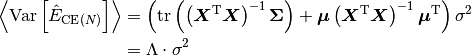
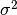
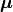

9. DFT計算の構造探索¶
9.1. Theoretical backgrounds¶
精度の高いクラスター展開には，交差検定スコアが低いことは必要条件であるが，十分条件ではない． クラスター展開を偏った相関関数を持つ構造についてのみ行い，その結果を用いて，相関関数が大きく離れた構造のシミュレーションを行うと，交差検定スコアが低いにも関わらず，計算誤差が大きいというような場合がありえる． このような問題を避けるためには，交差検定スコアの絶対値だけを精度の指標にするのではなく，相関関数が大きく離れた構造に対する予測精度についても検討しなければならない．
このような相関関数が大きく離れた構造に対する予測精度は，エネルギー予測の分散により表される． エネルギー予測の分散が小さくなるような，重要なDFT構造を選択することで，合金構造の母集団に含まれるすべての構造に対する予測精度を向上させる． N種類のモデル構造とm種類のクラスターのもとで，最小二乗法によりECIを求めた場合，構造の母集団に対するエネルギー予測の分散の平均は，統計学により次式で表される．

ここで，N種類のモデル構造の相関関数はN×m行列 により表される．
 は母集団における誤差の分散である．
構造の母集団は および  のみにより記述される．
は母集団における相関関数の共分散を表すm×m行列， は母集団における相関関数の平均を表すm次元ベクトルである．
構造の母集団に対する予測精度を向上させるため，エネルギー予測の分散の平均を小さくするDFT構造を選択する．
構造選択前にはDFT計算によりエネルギーを評価することができないので，構造選択時には を見積もることができない．
よって，  を小さくするDFT構造を選ぶことで，クラスター展開の予測精度を向上させる．
を小さくするDFT構造を選ぶことで，クラスター展開の予測精度を向上させる．
9.2. search_poscar_variance¶
trial CEを検定および改善するための，DFT構造をsimulated annealingにより探索する．
CORRELATIONによりtrial CEの相関関数を指定する．
2元系にのみ対応．
Input files
Output files
POSCAR_new
9.3. MKPOS.in¶
4原子のユニットセルのa,b軸を2倍にしたセル(16原子)において，12原子(spin=+1)，4原子(spin=-1)を配置させた構造を探索する例．CLUSTERINDEXで指定したクラスターに対して最適な構造を探索する．:
ISUB = 1
NUCELL = 2 2 1
NCHANGE = 4
SPIN = 1 -1
NALLCLUSTER = 53
CLUSTERINDEX = 0 1 2 3 4 5 8 16 35 49 48
TEMPINIT = 1000
TEMPFINAL = 1
TEMPMUL = 0.99
NSTEP = 20
9.3.1. ISUB tag¶
結晶格子において，クラスター展開を行う格子点を指定する． UPOSCARの格子点数（6行目）のISUB番目に指定された格子点において，クラスター展開を行う
Default : 1
Example : ISUB = 1 3
9.3.2. NCHANGE tag¶
原子の配置を考慮する格子点において，原子を配置させる数． N元系の場合は，N-1種類だけ指定する． 一つ目の原子種の数は（格子点数-NCHANGE）となる．
Default : none
Example : NCHANGE = 16
9.3.3. SPIN tag¶
原子のスピンの値．2元系の場合，2つ指定する． correlation で用いたスピン-原子種の対応を用いる．
Default : none
Example : SPIN = 1 -1
Exampleの場合，NCHANGEで指定した原子数だけスピンを-1にする．
9.3.6. CLUSTERINDEX tag¶
trial CEのクラスター番号．
Default : none
Example : CLUSTERINDEX = 0 1 2 3 4 5 8 16 35 48 49
9.3.7. TEMPINIT tag, TEMPFINAL tag¶
simulated annealingの初期温度と最終温度．
Default : none
Example : TEMPINIT = 1
Example : TEMPFINAL = 0.001
9.3.8. TEMPMUL tag¶
simulated annealingにおける温度設定の指数関数の底．0から1の値を指定する．
Default : none
Example : TEMPMUL = 0.9